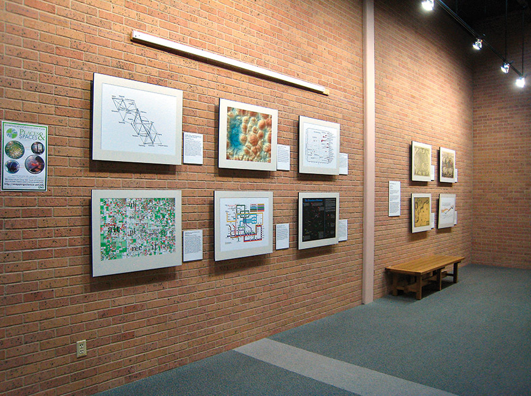

Places & Spaces: Mapping Science
Drawing from across cultures and across scholarly disciplines, the Places & Spaces: Mapping Science traveling exhibit demonstrates the power of maps (visualizations) to address vital questions about the contours and content of scientific knowledge. As of December 2020, the exhibit features 100 framed maps, 24 macroscopes, an award-winning short film, touch screen interactives, and sculptural elements created by more than 230 leading experts in the natural, physical, and social sciences, scientometrics, visual arts, science policy, and the humanities.
The maps have been displayed in 30 countries on six continents. Places & Spaces showcases innovative approaches to data visualization, critical for making sense of the large streams of data we confront on a daily basis. Ranging from reproductions of early maps of our planet, to the first maps showing the terrain of science, to maps showing the national mood through tweets over the course of a day, the exhibit touches on subject matter as diverse as polar bear habitat, forecasting epidemics, and the settings of Victorian poems.
In 2015 Places & Spaces expanded from exhibiting static maps of science to include interactive data visualizations we call macroscopes. Macroscopes are software tools that help one focus on patterns in data that are too large or complex to view unaided. Interactive by nature, one can use them to visually explore data and to ask and answer new questions.
- 
Maps
Maps serve as navigational tools, documenting the landscape, warning of hazards, and highlighting potential routes of travel. Science maps chart the more abstract spaces of data and knowledge, helping forecast new fields of inquiry. Individually and as a whole, the science maps in Places & Spaces: Mapping Science use data to tell meaningful stories that both the scientist and the layperson can understand and appreciate.
show Gallery (3 Pictures)

Macroscopes
Macroscopes are software tools that help us focus on patterns in data that are too large or complex to see with the naked eye. Interactive by nature, they are best used to visually explore data and to ask and answer new questions. Each macroscope featured was selected as an outstanding example of how visualization can reveal trends and patterns in data.
show Gallery (2 Pictures)